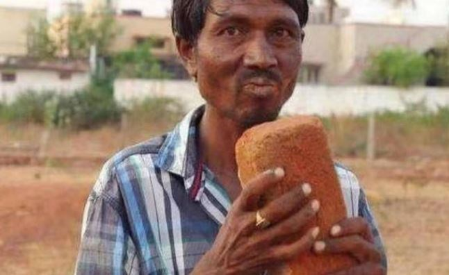

在现在人们因为经常会在网络上购买一些东西，以至于自己常常一个月的工资刚刚发下来就会全部贡献出去，也正是因为这样，人们常常都会开玩笑说“自己每个月都是在吃土”，这样的说法只是在形容人们的钱都被自己花出去了，以至于没有办法在继续生活，形容自己的生活艰苦，当然并不是真的吃土，如果有人是真的吃土的话，想必很多人也是不会相信的。
吃土，对于现代的人来说，仅仅只是一个自嘲的解压的方式，但是让人们想不到的是，在这个世界上却真的有人吃土，并且这种吃土还并不因为这个人被迫，相反是因为自己的喜欢。在听到这样的事情的时候，人们第一反应就是“不可能”，怎么还会有人吃土呢？更不可能是自己喜欢吃土呀？这样的事情不是太过离谱了吗？然而越是不可能会发生的事情，在世界上却会发生，越是离谱的事情，越是以一种正大光明的状态出现。
我们都知道，每一个国家当中都会有不同的文化，在这些文化当中，都有着一些比较奇葩的文化出现，但是至今还没有出现一个文化是以吃土这样的事情出现；每一个国家当中都会有自己独特的饮食文化，而在这些饮食文化当中，人们最推崇的还是美味，什么时候“土”也能够和美味画上了等号了？这样的事情显然是不可能的。尽管人们对于这样的事情都是不相信的态度，但是这样的事情还是发生了。在印度有一名叫做马克汉的人，人们都说他是一名奇人，因为在他的生活当中，和土之间完全是离不开的状态，在他自己二十岁的时候就已经开始吃土的历程了，而在这个吃土的过程当中，据马克汉自己所说，是他自己最为开始的时刻；马克汉不仅仅只是会吃土，砖头也是马克汉的最爱；一般人们都是对于美食非常的喜欢，但是人们观念当中的美食对于马克汉来说，完全没有丝毫的诱惑力，只有土和砖头才能够让马克汉非常的喜欢。这样的事情在人们看来，完全是一件无法理解的事情，人们都觉得或许是在马克汉的身上发生了一些特殊的事情，所以才会有这样的事情发生，那么到底在马克汉的身上发生了什么样的事情，才会有这样的事情出现呢？
说起马克汉的生活，也是一言难尽，在他年轻的时候，自己的家庭也是非常的贫穷，常常吃了上顿没下顿，也正是因为这样长时间的饥饿的庄陶，让马克汉自己也没有了任何的食欲；但是人不吃饭怎么能行的，这样继续下去不得是活活饿死吗？为了能够继续的活下去，马克汉就只能强迫自己吃东西，只要是吃的食物，无论是什么样的东西，马克汉都会毫不犹豫的往自己的嘴里面塞进去，就是在一次非常偶然的情况当中，马克汉竟然吃下了一块砖头，也就是这一块砖头，让马克汉感觉自己是找到了一种世界上最为美味的事物，马克汉认为这样的食物就是人间美味。也就是在这样的情况当中，自马克汉二十岁之后，到了现在四十岁的年纪，一直都在吃土、吃砖头，也正是因为有了这样的一种嗜好，所以人们对于马克汉都有一种异样的眼光，也没有任何的姑娘愿意嫁给他。
马克汉的生活当中，土和砖头都是他的生活当中最不能够缺少的东西，如果这样的东西都没有的话，那么对于马克汉来说，无异于是人生当中最大的打击，所以只要是自己闲暇的时候，马克汉都会来到外面寻找，将这些砖头都积累下来，等到自己饿的时候就拿这些东西填饱自己的肚子。因为这样的特殊的癖好，所以马克汉同村的村民都以为马克汉是不是有什么疾病，不论是身体上的还是心理上的，马克汉或许都有；也正是因为人们的UI与马克汉的猜测，所以人们一旦见到了马克汉的时候，都会尽力的躲开，而村子里面的孩子更是远远的就跑开了。因为人们对于马克汉这样的害怕，所以马克汉也一度非常的自卑，认为自己一定是一个有病的人，但是对于这样的疾病还没有任何的办法，自己完全没有任何的能力将这样的瘾戒掉，只能够不断的吃土、吃砖头。
因为马克汉这样的情况，也引起了很多的医院的注意，在得知了马克汉主要的情况之后，医院也决定要免费的为马克汉诊治，了解在马克汉的身上究竟是发生了什么样的事情，是不是一种疾病。
